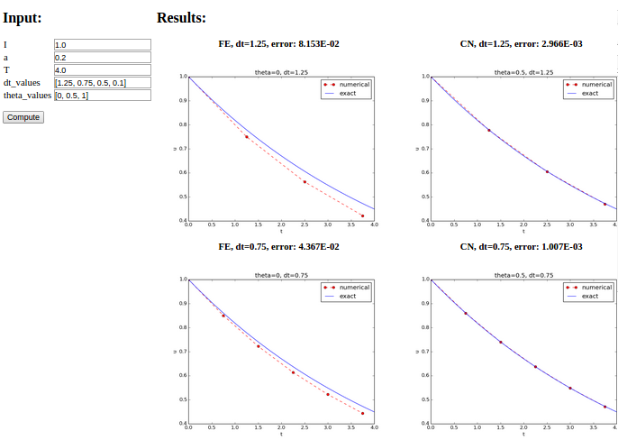

It is good programming practice to let programs read input from some user interface, rather than requiring users to edit parameter values in the source code. With effective user interfaces it becomes easier and safer to apply the code for scientific investigations and in particular to automate large-scale investigations by other programs (see the section Automating scientific experiments).
Reading input data can be done in many ways. We have to decide on a the functionality of the user interface, i.e., how we want to operate the program when providing input, and then use appropriate tools to implement the user interface. There are four basic types of user interface, listed here with increasing complexity of the implementation:
decay.py program.
The command-line arguments are all the words that appear on the
command line after the program name. Running a program prog
as prog arg1 arg2 means that there are two command-line arguments
(separated by white space): arg1 and arg2.
Python stores all the command-line arguments in
the list sys.argv, and there are, in principle, two ways of programming with
command-line arguments in Python:
sys.argv[1:] list.--option value on
the command line to replace the default value of an input parameter
option by value (and utilize the argparse.ArgumentParser tool
for implementation).prog.py with
specification of two parameters p and delta on the command line.
With positional command-line arguments we write
Terminal> python decay.py 2 0.5
and must know that the first argument 2 represents p and the
next 0.5 is the value of delta.
With option-value pairs we can run
Terminal> python decay.py --delta 0.5 --p 2
Now, both p and delta are supposed to have default values in the program,
so we need to specify only the parameter that is to be changed from
its default value, e.g.,
Terminal> python decay.py --p 2 # p=2, default delta
Terminal> python decay.py --delta 0.7 # delta-0.7, default a
Terminal> python decay.py # default a and delta
For our decay.py module file, we want include functionality such
that we can read \( I \), \( a \), \( T \), \( \theta \), and a range of \( \Delta t \)
values from the command line. A plot is then to be made, comparing
the different numerical solutions for different \( \Delta t \) values
against the exact solution. The technical details of getting the
command-line information into the program is covered in the next
two sections.
The simplest way of reading the input parameters is to
decide on their sequence on the command line and just index
the sys.argv list accordingly.
Say the sequence is \( I \), \( a \), \( T \), \( \theta \) followed by an
arbitrary number of \( \Delta t \) values. This code extract
these positional command-line arguments:
import sys
I = float(sys.argv[1])
a = float(sys.argv[2])
T = float(sys.argv[3])
theta = float(sys.argv[4])
dt_values = [float(arg) for arg in sys.argv[5:]]
Note that all elements in sys.argv are string objects.
If the values will enter mathematical computations, we need
to explicitly convert the strings to numbers.
Instead of specifying the \( \theta \) value, we could be a bit more
sophisticated and let the user write the name of the scheme:
BE for Backward Euler, FE for Forward Euler, and CN
for Crank-Nicolson. Then we must map this string to the proper
\( \theta \) value, an operation elegantly done by a dictionary:
scheme = sys.argv[4]
scheme2theta = {'BE': 1, 'CN': 0.5, 'FE': 0}
if scheme in scheme2theta:
theta = scheme2theta[scheme]
else:
print 'Invalid scheme name:', scheme; sys.exit(1)
Now we want to specify option-value pairs on the command line,
using --I for I (\( I \)), --a for a (\( a \)), --T for T (\( T \)),
--scheme for the scheme name (BE, FE, CN),
and --dt for the sequence of dt (\( \Delta t \)) values.
Each parameter must have a sensible default value so
that we specify the option on the command line only when the default
value is not suitable. Here is a typical run:
Terminal> python decay.py --I 2.5 --dt 0.1 0.2 0.01 --a 0.4
Observe the major advantage over positional command-line arguments: the input is much easier to read and much easier to write. With positional arguments it is easy to mess up the sequence of the input parameters and quite challenging to detect errors too, unless there are just a couple of arguments.
Python's ArgumentParser tool in the argparse module makes it easy
to create a professional command-line interface to any program. The
documentation of ArgumentParser demonstrates its
versatile applications, so we shall here just list an example
containing the most basic features. It always pays off to use ArgumentParser
rather than trying to manually inspect and interpret option-value pairs
in sys.argv!
The use of ArgumentParser typically involves three steps:
import argparse
parser = argparse.ArgumentParser()
# Step 1: add arguments
parser.add_argument('--option_name', ...)
# Step 2: interpret the command line
args = parser.parse_args()
# Step 3: extract values
value = args.option_name
A function for setting up all the options is handy:
def define_command_line_options():
import argparse
parser = argparse.ArgumentParser()
parser.add_argument(
'--I', '--initial_condition', type=float,
default=1.0, help='initial condition, u(0)',
metavar='I')
parser.add_argument(
'--a', type=float, default=1.0,
help='coefficient in ODE', metavar='a')
parser.add_argument(
'--T', '--stop_time', type=float,
default=1.0, help='end time of simulation',
metavar='T')
parser.add_argument(
'--scheme', type=str, default='CN',
help='FE, BE, or CN')
parser.add_argument(
'--dt', '--time_step_values', type=float,
default=[1.0], help='time step values',
metavar='dt', nargs='+', dest='dt_values')
return parser
Each command-line option is defined through the parser.add_argument
method. Alternative options, like the short --I and the more
explaining version --initial_condition can be defined. Other arguments
are type for the Python object type, a default value, and a help
string, which gets printed if the command-line argument -h or --help is
included. The metavar argument specifies the value associated with
the option when the help string is printed. For example, the option for
\( I \) has this help output:
Terminal> python decay.py -h
...
--I I, --initial_condition I
initial condition, u(0)
...
The structure of this output is
--I metavar, --initial_condition metavar
help-string
Finally, the --dt option demonstrates how to allow for more than one
value (separated by blanks) through the nargs='+' keyword argument.
After the command line is parsed, we get an object where the values of
the options are stored as attributes. The attribute name is specified
by the dist keyword argument, which for the --dt option is
dt_values. Without the dest argument, the value of an option --opt
is stored as the attribute opt.
The code below demonstrates how to read the command line and extract the values for each option:
def read_command_line_argparse():
parser = define_command_line_options()
args = parser.parse_args()
scheme2theta = {'BE': 1, 'CN': 0.5, 'FE': 0}
data = (args.I, args.a, args.T, scheme2theta[args.scheme],
args.dt_values)
return data
As seen, the values of the command-line options are available as
attributes in args: args.opt holds the value of option --opt, unless
we used the dest argument (as for --dt_values) for specifying the
attribute name. The args.opt attribute has the object type specified
by type (str by default).
The making of the plot is not dependent on whether we read data from the command line as positional arguments or option-value pairs:
def experiment_compare_dt(option_value_pairs=False):
I, a, T, theta, dt_values = \
read_command_line_argparse() if option_value_pairs else \
read_command_line_positional()
legends = []
for dt in dt_values:
u, t = solver(I, a, T, dt, theta)
plt.plot(t, u)
legends.append('dt=%g' % dt)
t_e = np.linspace(0, T, 1001) # very fine mesh for u_e
u_e = exact_solution(t_e, I, a)
plt.plot(t_e, u_e, '--') # dashed line for u_e
legends.append('exact')
plt.legend(legends, loc='upper right')
plt.title('theta=%g' % theta)
plotfile = 'tmp'
plt.savefig(plotfile + '.png'); plt.savefig(plotfile + '.pdf')
The Python package Parampool
can be used to automatically generate a web-based graphical user interface
(GUI) for our simulation program. Although the programming technique
dramatically simplifies the efforts to create a GUI, the forthcoming
material on equipping our decay module with a GUI is quite technical
and of significantly less importance than knowing how to make
a command-line interface.
The first step is to identify a function that performs the computations and that takes the necessary input variables as arguments. This is called the compute function in Parampool terminology. The purpose of this function is to take values of \( I \), \( a \), \( T \) together with a sequence of \( \Delta t \) values and a sequence of \( \theta \) and plot the numerical against the exact solution for each pair of \( (\theta, \Delta t) \). The plots can be arranged as a table with the columns being scheme type (\( \theta \) value) and the rows reflecting the discretization parameter (\( \Delta t \) value). Figure 2 displays of the graphical web interface may look like after results are computed (there are \( 3\times 3 \) plots in the GUI, but only \( 2\times 2 \) are visible in the figure).
Figure 2: Automatically generated graphical web interface.

To tell Parampool what type of input data we have,
we assign default values of the right type to all arguments in the
compute function, here called main_GUI:
def main_GUI(I=1.0, a=.2, T=4.0,
dt_values=[1.25, 0.75, 0.5, 0.1],
theta_values=[0, 0.5, 1]):
The compute function must return the HTML code we want for displaying
the result in a web page. Here we want to show a
table of plots.
Assume for now that the HTML code for one plot and the value of the
norm of the error can be computed by some other function compute4web.
The main_GUI function can then loop over \( \Delta t \) and \( \theta \)
values and put each plot in an HTML table. Appropriate code goes like
def main_GUI(I=1.0, a=.2, T=4.0,
dt_values=[1.25, 0.75, 0.5, 0.1],
theta_values=[0, 0.5, 1]):
# Build HTML code for web page. Arrange plots in columns
# corresponding to the theta values, with dt down the rows
theta2name = {0: 'FE', 1: 'BE', 0.5: 'CN'}
html_text = '<table>\n'
for dt in dt_values:
html_text += '<tr>\n'
for theta in theta_values:
E, html = compute4web(I, a, T, dt, theta)
html_text += """
<td>
<center><b>%s, dt=%g, error: %.3E</b></center><br>
%s
</td>
""" % (theta2name[theta], dt, E, html)
html_text += '</tr>\n'
html_text += '</table>\n'
return html_text
Making one plot is done in compute4web. The statements should be
straightforward from earlier examples, but there is one new feature:
we use a tool in Parampool to embed the PNG code for a plot file
directly in an HTML image tag. The details are hidden from the
programmer, who can just rely on
relevant HTML code in the string html_text. The function looks like
def compute4web(I, a, T, dt, theta=0.5):
"""
Run a case with the solver, compute error measure,
and plot the numerical and exact solutions in a PNG
plot whose data are embedded in an HTML image tag.
"""
u, t = solver(I, a, T, dt, theta)
u_e = exact_solution(t, I, a)
e = u_e - u
E = np.sqrt(dt*np.sum(e**2))
plt.figure()
t_e = np.linspace(0, T, 1001) # fine mesh for u_e
u_e = exact_solution(t_e, I, a)
plt.plot(t, u, 'r--o') # red dashes w/circles
plt.plot(t_e, u_e, 'b-') # blue line for exact sol.
plt.legend(['numerical', 'exact'])
plt.xlabel('t')
plt.ylabel('u')
plt.title('theta=%g, dt=%g' % (theta, dt))
# Save plot to HTML img tag with PNG code as embedded data
from parampool.utils import save_png_to_str
html_text = save_png_to_str(plt, plotwidth=400)
return E, html_text
The web GUI is automatically generated by the following code, placed in a file decay_GUI_generate.py
from parampool.generator.flask import generate
from decay import main_GUI
generate(main_GUI,
filename_controller='decay_GUI_controller.py',
filename_template='decay_GUI_view.py',
filename_model='decay_GUI_model.py')
Running the decay_GUI_generate.py program results in three new
files whose names are specified in the call to generate:
decay_GUI_model.py defines HTML widgets to be used to set
input data in the web interface,templates/decay_GUI_views.py defines the layout of the web page,decay_GUI_controller.py runs the web application.The web GUI is started by
Terminal> python decay_GUI_controller.py
Open a web browser at the location 127.0.0.1:5000. Input fields for
I, a, T, dt_values, and theta_values are presented. Figure
2 shows a part of the resulting page if we run
with the default values for the input parameters.
With the techniques demonstrated here, one can
easily create a tailored web GUI for a particular type of application
and use it to interactively explore physical and numerical effects.